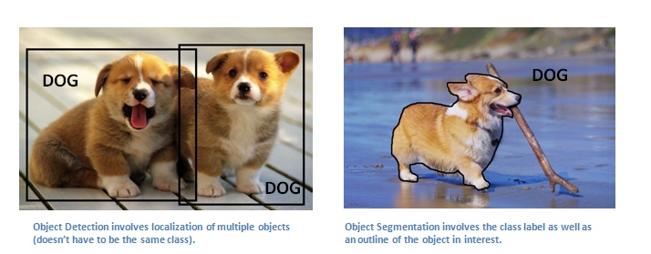
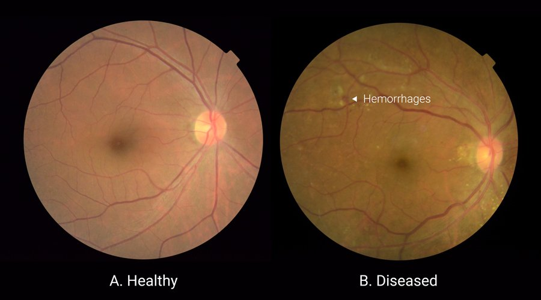
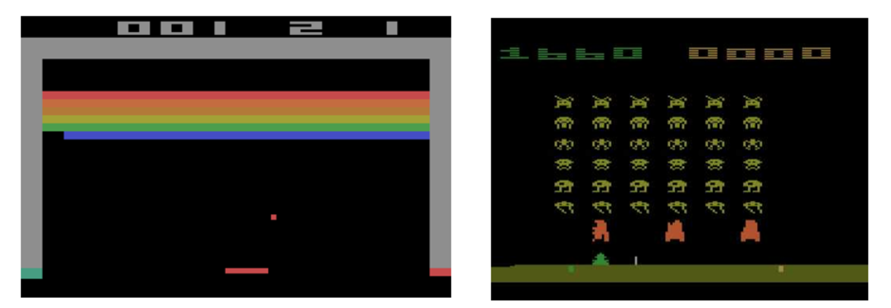
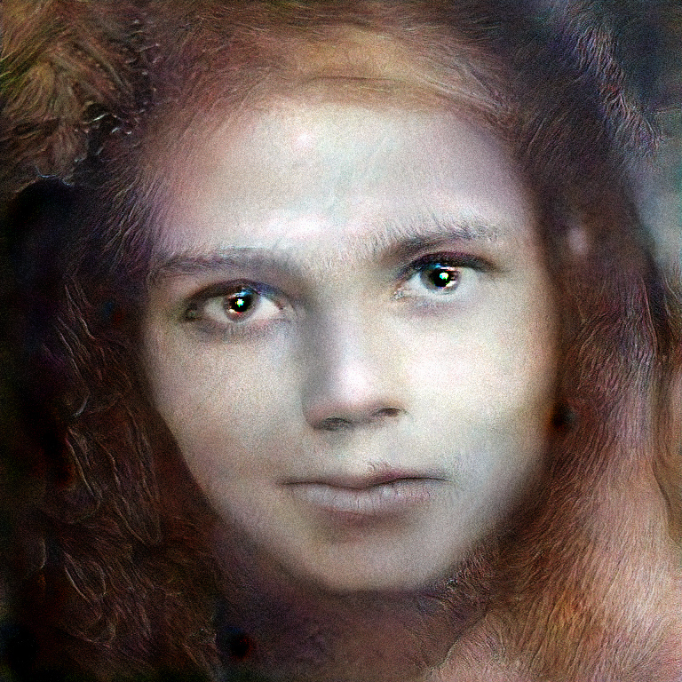
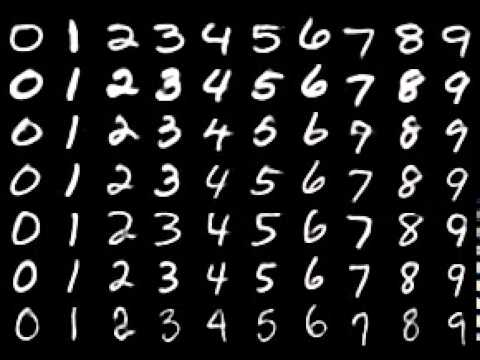
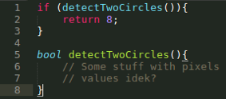

Definitions, the Turing Test, and the four approaches to AI — the foundation of everything ahead.
Module 1 · Based on Russell & Norvig, AIMA Chapter 1
Beginner Foundations ~30 minPrerequisites: None. This is the very first step.
“The last 10 years have been about building a world that is mobile-first. In the next 10 years, we will shift to a world that is AI first.”
You already use AI dozens of times a day without thinking about it. When Instagram automatically blurs the background of a portrait in focus mode, that's AI detecting where the person ends and the background begins. When Netflix suggests exactly the show you end up binging, that's AI learning your taste from millions of viewing histories. When Google Translate turns an Arabic sentence into fluent English in milliseconds, that's AI — a task that once required a professional human translator.
Beyond everyday apps, AI now sets the state of the art across entire fields:
| Application area | What AI achieves there |
|---|---|
| Computer Vision | Convolutional neural networks (CNNs) attain the best performance on vision tasks — recognizing objects, faces, and scenes in images. |
| Healthcare | Deep learning outperforms trained specialists in some medical recognition tasks, such as spotting disease in medical scans. |
| Games | Reinforcement learning attains the best performance on complex games — famously AlphaGo, which defeated the world's top Go players. |
| Natural Language Processing | Neural networks excel at translation; large language models like ChatGPT hold fluent conversations, write essays, and answer questions. |
| Art | Generative models create realistic synthetic images — faces, paintings, and photographs of people who never existed. |




So AI clearly works. But what exactly is it? That question turns out to be surprisingly subtle — and answering it carefully is the goal of this module.

Before defining artificial intelligence, we need to pin down intelligence itself. Webster's dictionary describes intelligence as the ability to:
With that in hand, here are the two working definitions this course builds on:
“The theory and development of computer systems able to perform tasks that normally require human intelligence, such as visual perception, decision-making, and translation between languages.”
“A type of AI that provides computers with the ability to learn without being explicitly programmed.”
Think of three concentric circles. AI is the outer circle: any technique that makes machines perform tasks requiring intelligence — including old-school hand-coded rules. Machine Learning is the middle circle: the subset of AI where systems learn from data instead of following explicit instructions. Deep Learning is the inner circle: the subset of ML that uses many-layered neural networks — the engine behind most of the breakthroughs in the table above.
Suppose you want a program that reads a handwritten digit — say, telling a “0” from a “1” or a “7”. There are two fundamentally different ways to build it:
| The classical approach | The learning approach |
|---|---|
| Hand-write functions that detect features: a function that looks for a circle (that's probably a 0), one that detects a diagonal line (maybe a 7 or a 1), and so on for every stroke, loop, and corner — then combine them with hand-crafted rules. | Show the computer many input/output examples — thousands of images, each labeled with the correct digit — and let the machine learn the mapping from image to digit on its own. |

detectTwoCircles() for every feature — and quickly running out of ideas for how to define them in pixels. (From the course slides.)The classical approach collapses under the messiness of real handwriting: everyone writes a “7” differently, and no human can anticipate every variation with hand-coded rules. The learning approach sidesteps the problem entirely — and that shift, from programming the answer to learning it from examples, is why machine learning dominates modern AI.
Historically, researchers have defined AI along two dimensions: is the goal to model thought processes or behavior? And should the standard of success be human performance or an ideal called rationality? Crossing the two gives the famous 2×2 grid from Russell & Norvig:
| Humanly | Rationally | |
|---|---|---|
| Thinking | Thinking Humanly Cognitive science / cognitive modeling: build systems whose internal reasoning mirrors the human mind. |
Thinking Rationally The “laws of thought”: build systems that reason via formal logic, tracing back to Aristotle. |
| Acting | Acting Humanly The Turing Test: build systems whose behavior is indistinguishable from a human's. |
Acting Rationally Rational agents: build systems that act to achieve the best outcome. The modern approach. |
If we want a machine to think like a person, we first need to know how people think — through introspection, psychological experiments, and brain imaging. This program became cognitive science: a fascinating field, but its goal is to understand the mind, not necessarily to build the most capable machines.
Skip the question of how the machine thinks and just ask: can its behavior fool a human judge? This is the Turing Test — important enough to get its own section below.
Aristotle tried to codify “right thinking” with syllogisms — patterns of argument that always yield correct conclusions from correct premises. The classic example: “Socrates is a man; all men are mortal; therefore Socrates is mortal.” This tradition led to formal logic and early hopes that intelligence could be reduced to logical deduction. The problem: the real world is full of uncertainty (logic wants facts to be true or false, but real knowledge is rarely certain), and even when logic applies, the computational complexity of reasoning over any realistic problem explodes. Pure logic alone is impractical as a foundation for intelligence.
A rational agent acts so as to achieve the best outcome — or, under uncertainty, the best expected outcome. This is the approach modern AI (and this course) adopts, and it too gets its own section below.
The two “humanly” approaches share a deep problem: humans are a difficult standard to copy.
Alan Turing (1912–1954), the British mathematician who helped found computer science itself, proposed in his 1950 paper “Computing Machinery and Intelligence” a way to sidestep the fuzzy question “can machines think?” entirely. His operational test: a human interrogator holds a text conversation with two hidden parties — one a human, one a machine. If, after questioning both, the interrogator cannot reliably tell which is which, the machine passes the test.
Passing the Turing Test does not necessarily mean the machine is intelligent. It means the machine mimics human conversational behavior convincingly. A system could pass by imitation and clever pattern-matching without anything we'd call understanding — and conversely, a genuinely intelligent system might fail simply because it doesn't behave like a human.
Turing's test is demanding: to hold up under interrogation, a machine needs a whole stack of capabilities. Remarkably, that list — plus two additions from the Total Turing Test (where the interrogator can also pass physical objects through a hatch and watch the machine act) — maps exactly onto the main branches of AI today:
| Capability | Needed for | AI branch |
|---|---|---|
| Natural language processing | Communicating in a human language | NLP |
| Knowledge representation | Storing what it knows and hears | Knowledge representation |
| Automated reasoning | Answering questions and drawing new conclusions | Reasoning & inference |
| Machine learning | Adapting to new circumstances and detecting patterns | Machine learning |
| Computer vision (Total Turing Test) | Perceiving objects it is shown | Computer vision |
| Robotics (Total Turing Test) | Manipulating objects and moving about | Robotics |
Here's the kind of exchange an evaluator might have today — small talk about favorite movies. Could you tell there's a machine on the other end?
The evaluator walks away unable to tell it's a machine. Modern systems like ChatGPT and Google's LaMDA are widely reported to pass casual Turing-style tests exactly like this one — which, seventy years after Turing's paper, tells us as much about the limits of the test as it does about the machines.
The approach modern AI settles on is the fourth quadrant. A rational agent is one that acts to achieve the best outcome — or, when there is uncertainty (which is almost always), the best expected outcome. The standard isn't “did it think like a person?” or even “did it reason logically?” — it's simply: did it do the right thing, given what it knew?
Note that rational action doesn't even require deliberation. When you touch a hot surface, you yank your hand back before any conscious reasoning happens. That reflex is perfectly rational — it achieves the best outcome — despite involving no chain of logical inference at all. Rationality is about outcomes, not about the internal process that produces them.
Two advantages make this the winning definition:
For centuries, would-be aviators failed by strapping on wings and flapping like birds. The Wright brothers succeeded when they stopped imitating birds and started studying aerodynamics — the underlying principles of flight. Aeronautical engineering texts don't define their goal as “making machines that fly so exactly like pigeons that they fool other pigeons.” Likewise, AI succeeds by studying the underlying principles of rationality, not by copying human thought.
This is the definition the AIMA textbook — and this course — adopts: AI is the study and construction of rational agents. Every module that follows, from search to learning, is ultimately about building agents that act rationally.
No code yet — this module is about concepts. Try each question honestly before revealing the solution.
Place each of these into the quadrant of the 2×2 grid it best fits: (a) a spam filter that learns to maximize correctly-sorted mail, (b) a chess program that searches for the objectively best move, (c) an ELIZA-style chatbot built purely to sound like a human therapist, (d) a self-driving car choosing maneuvers to minimize expected accident risk.
(a) Acting rationally — it optimizes an outcome (correct sorting), with no pretense of human-like behavior. (b) Thinking rationally is a defensible answer (it performs logical/exhaustive deliberation toward correct conclusions), though since the deliberation serves choosing the best move, acting rationally is also acceptable. (c) Acting humanly — its entire goal is to imitate human conversation, Turing Test style. (d) Acting rationally — it maximizes expected outcome (safety) under uncertainty; it certainly shouldn't drive like a typical human.
In two sentences, explain why passing the Turing Test is neither necessary nor sufficient for intelligence.
Not sufficient: a system can pass by convincingly mimicking human conversation through pattern-matching and imitation, without any genuine understanding or general intelligence behind the words. Not necessary: a genuinely intelligent system (say, a superhuman chess engine or a scientific-discovery system) can fail the test simply because it doesn't chat like a human — just as an airplane genuinely flies without fooling anyone into thinking it's a bird.
For the handwritten-digit problem, name one weakness of the hand-coded-features (classical) approach and one requirement of the learning approach.
Weakness of the classical approach: handwriting varies endlessly, so no set of hand-written feature detectors (circle detectors, diagonal-line detectors, …) can anticipate every way people draw a digit — the rules become brittle and never cover all cases. Requirement of the learning approach: a large collection of labeled examples (many images, each paired with the correct digit) from which the machine can learn the input→output mapping.
What intelligence and AI are, how AI ⊃ ML ⊃ Deep Learning nest, the four approaches to defining AI (thinking/acting × humanly/rationally), what the Turing Test measures — and what it doesn't — and why acting rationally, the rational-agent view, is the definition modern AI is built on. That's the lens for the entire course.
Next up: Module 2 — History & Foundations of AI. Where did these ideas come from? We'll trace AI from its philosophical and mathematical roots through the booms, the winters, and the deep learning revolution.